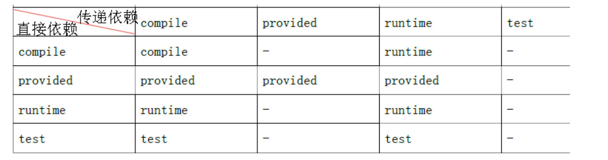
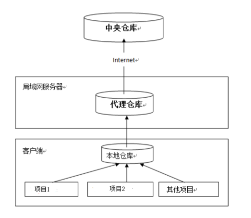
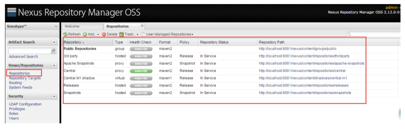
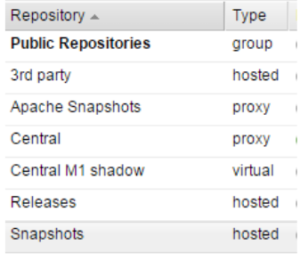
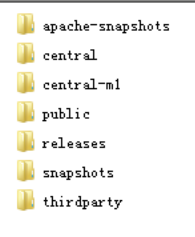
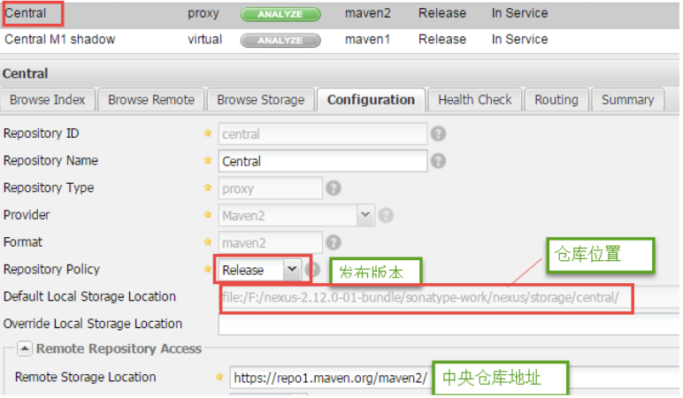
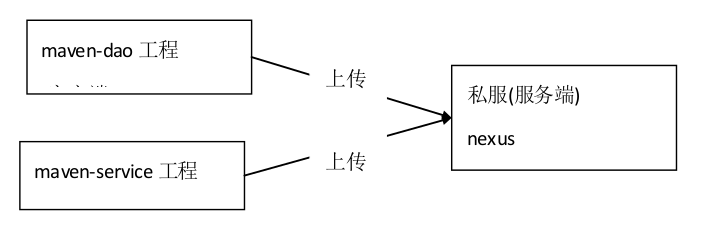
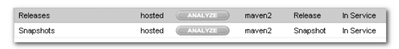
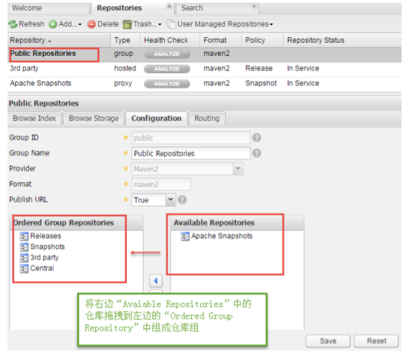
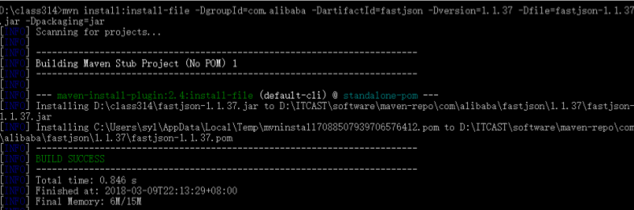

maven除了能够方便我们导包.打包等,还有很多高级的用法,本文介绍一下:
maven的拆分和聚合;远程仓库私服;安装第三jar包.
回顾
首先回顾一下maven的基本用法:https://zhangkexuan.github.io//2020/03/23/java-20-Maven/
maven是项目管理工具,他的关键是:
依赖管理: maven对项目中的jar包,可以通过坐标来统一管理jar包
一键构建:有很多插件,包括集成的tomcat插件,编译、测试、打包、安装、发布很方便
由此可见maven最重要的是对依赖的管理,而这又很依赖于仓库
本地仓库:pom文件中定义的jar坐标优先查找本地仓库
中央仓库:本地找不到了,就会自动在中央仓库中国寻找
私服:在公司中,本地没jar,又不让你使用中央仓库,会给你提供一个私服
maven在构建时,最常见的命令Compile、Test、Package、Install、Deploy、Clean
依赖
依赖传递
我们如果添加发现spring-webmvc，会发现除了 spring-webmvc 以外的其他 jar。因为我们的项目依赖 spring-webmv.jar,而spring-webmv.jar 会依赖 spring-beans.jar 等等,所以 spring-beans.jar 这些 jar 包也出现在了我们的 maven 工程中,这种现象我们称为依赖传递。
依赖冲突
如果我们有手动加入了spring-beans.jar，就很容易出现依赖冲突
解决冲突
依赖选定规则
第一声明者优先原则：
在 pom 文件定义依赖,先声明的依赖为准。路径近者优先原则：
例如:还是上述情况,spring-contex 和 spring-webmvc 都会传递过来 spirng-beans,那如果直接把 spring-beans 的依赖直接写到 pom 文件中,那么项目就不会再使用其他依赖传递来的 spring-beans,因为自己直接在 pom 中定义 spring-beans 要比其他依赖传递过来的路径要近。
冲突解决方式
- 排除依赖
上边的问题也可以通过排除依赖方法辅助依赖调解,如下:
比如在依赖 spring-webmvc 的设置中添加排除依赖,排除 spring-beans,
下边的配置表示:依赖 spring-webmvc,但排除 spring-webmvc 所依赖的 spring-beans。
<dependency>
<groupId>org.springframework</groupId>
<artifactId>spring-webmvc</artifactId>
<version>4.2.4.RELEASE</version>
<exclusions>
<exclusion>
<groupId>org.springframework</groupId>
<artifactId>spring-beans</artifactId>
</exclusion>
</exclusions>
</dependency>
- 锁定版本
使用dependencyManagement可以锁定版本，锁定并不导入哦！
<dependencyManagement>
<dependencies>
<dependency>
<groupId>org.springframework</groupId>
<artifactId>spring-context</artifactId>
<version>${spring.version}</version>
</dependency>
</dependencies>
</dependencyManagement>
环境准备
数据库：
/*
Navicat MySQL Data Transfer
Source Server : localhost_3306
Source Server Version : 50096
Source Host : localhost:3306
Source Database : maven_ssm
Target Server Type : MYSQL
Target Server Version : 50096
File Encoding : 65001
*/
SET FOREIGN_KEY_CHECKS=0;
-- ----------------------------
-- Table structure for `items`
-- ----------------------------
DROP TABLE IF EXISTS `items`;
CREATE TABLE `items` (
`id` int(10) NOT NULL auto_increment,
`name` varchar(20) default NULL,
`price` float(10,0) default NULL,
`pic` varchar(40) default NULL,
`createtime` datetime default NULL,
`detail` varchar(200) default NULL,
PRIMARY KEY (`id`)
) ENGINE=InnoDB AUTO_INCREMENT=9 DEFAULT CHARSET=utf8;
-- ----------------------------
-- Records of items
-- ----------------------------
INSERT INTO `items` VALUES ('1', 'zhangkx', '1000', null, '2018-03-13 09:29:30', '带我走上人生巅峰');
INSERT INTO `items` VALUES ('2', 'zzz310', null, null, '2018-03-28 10:05:52', '插入测试');
INSERT INTO `items` VALUES ('3', 'zzz307', '199', null, '2018-03-07 10:08:04', '插入测试');
INSERT INTO `items` VALUES ('7', '插入测试', null, null, null, null);
INSERT INTO `items` VALUES ('8', '插入测试', null, null, null, null);
其他的都按照之前博客里ssm框架搭建来实现。很显然，目前搭建的就是普通的ssm框架模板。
ssm环境配置（pom设置）
版本信息
<modelVersion>4.0.0</modelVersion>
<groupId>uestc.zhangkx</groupId>
<artifactId>mavenDepart</artifactId>
<packaging>pom</packaging>
<version>1.0-SNAPSHOT</version>
<modules>
<module>dao</module>
<module>service</module>
<module>web</module>
</modules>
很直白的说明，packaging是pom说明这是父pom，modules是该父类所拥有的子类module名。
版本设置
有两种方式可以设置版本
<build>
<plugins>
<!-- 设置编译版本为 1.8 -->
<plugin>
<groupId>org.apache.maven.plugins</groupId>
<artifactId>maven-compiler-plugin</artifactId>
<version>3.1</version >
<configuration>
<source>1.8</source>
<target>1.8</target>
<encoding>UTF-8</encoding>
</configuration>
</plugin>
</plugins>
</build>
这个方式比较麻烦，是通过添加插件来控制编译版本的，现在可以直接通过设置properties来设置版本：
<properties>
<project.build.sourceEncoding>UTF-8</project.build.sourceEncoding>
<maven.compiler.source>14</maven.compiler.source>
<maven.compiler.target>14</maven.compiler.target>
</properties>
统一jar版本控制
<properties>
<spring.version>5.0.2.RELEASE</spring.version>
<slf4j.version>1.6.6</slf4j.version>
<log4j.version>1.2.12</log4j.version>
<shiro.version>1.2.3</shiro.version>
<mysql.version>8.0.19</mysql.version>
<mybatis.version>3.5.4</mybatis.version>
<spring.security.version>5.0.1.RELEASE</spring.security.version>
</properties>
其实就是配置了一个properties键值对，在版本选定里可以直接使用EL表达式。
锁定jar版本
<dependencyManagement>
<dependencies>
<dependency>
<groupId>org.springframework</groupId>
<artifactId>spring-context</artifactId>
<version>${spring.version}</version>
</dependency>
<dependency>
<groupId>org.springframework</groupId>
<artifactId>spring-web</artifactId>
<version>${spring.version}</version>
</dependency>
<dependency>
<groupId>org.springframework</groupId>
<artifactId>spring-webmvc</artifactId>
<version>${spring.version}</version>
</dependency>
<dependency>
<groupId>org.springframework</groupId>
<artifactId>spring-tx</artifactId>
<version>${spring.version}</version>
</dependency>
<dependency>
<groupId>org.springframework</groupId>
<artifactId>spring-test</artifactId>
<version>${spring.version}</version>
</dependency>
<dependency>
<groupId>org.mybatis</groupId>
<artifactId>mybatis</artifactId>
<version>${mybatis.version}</version>
</dependency>
</dependencies>
</dependencyManagement>
很多时候，别人添加模块时候，根据路径优先原则，很可能会覆盖掉父类中设置的版本，使用版本锁定可以彻底将版本固定，无法在子类中更改。
导入项目依赖
<dependencies>
<!-- spring -->
<dependency>
<groupId>org.aspectj</groupId>
<artifactId>aspectjweaver</artifactId>
<version>1.6.8</version>
</dependency>
<dependency>
<groupId>org.springframework</groupId>
<artifactId>spring-aop</artifactId>
<version>${spring.version}</version>
</dependency>
<dependency>
<groupId>org.springframework</groupId>
<artifactId>spring-context</artifactId>
<version>${spring.version}</version>
</dependency>
<dependency>
<groupId>org.springframework</groupId>
<artifactId>spring-context-support</artifactId>
<version>${spring.version}</version>
</dependency>
<dependency>
<groupId>org.springframework</groupId>
<artifactId>spring-web</artifactId>
<version>${spring.version}</version>
</dependency>
<dependency>
<groupId>org.springframework</groupId>
<artifactId>spring-orm</artifactId>
<version>${spring.version}</version>
</dependency>
<dependency>
<groupId>org.springframework</groupId>
<artifactId>spring-beans</artifactId>
<version>${spring.version}</version>
</dependency>
<dependency>
<groupId>org.springframework</groupId>
<artifactId>spring-core</artifactId>
<version>${spring.version}</version>
</dependency>
<dependency>
<groupId>org.springframework</groupId>
<artifactId>spring-test</artifactId>
<version>${spring.version}</version>
</dependency>
<dependency>
<groupId>org.springframework</groupId>
<artifactId>spring-webmvc</artifactId>
<version>${spring.version}</version>
</dependency>
<dependency>
<groupId>org.springframework</groupId>
<artifactId>spring-tx</artifactId>
<version>${spring.version}</version>
</dependency>
<dependency>
<groupId>junit</groupId>
<artifactId>junit</artifactId>
<version>4.12</version>
<scope>test</scope>
</dependency>
<dependency>
<groupId>mysql</groupId>
<artifactId>mysql-connector-java</artifactId>
<version>${mysql.version}</version>
</dependency>
<dependency>
<groupId>javax.servlet</groupId>
<artifactId>javax.servlet-api</artifactId>
<version>3.1.0</version>
<scope>provided</scope>
</dependency>
<dependency>
<groupId>javax.servlet.jsp</groupId>
<artifactId>jsp-api</artifactId>
<version>2.0</version>
<scope>provided</scope>
</dependency>
<dependency>
<groupId>jstl</groupId>
<artifactId>jstl</artifactId>
<version>1.2</version>
</dependency>
<!-- log start -->
<dependency>
<groupId>log4j</groupId>
<artifactId>log4j</artifactId>
<version>${log4j.version}</version>
</dependency>
<dependency>
<groupId>org.slf4j</groupId>
<artifactId>slf4j-api</artifactId>
<version>${slf4j.version}</version>
</dependency>
<dependency>
<groupId>org.slf4j</groupId>
<artifactId>slf4j-log4j12</artifactId>
<version>${slf4j.version}</version>
</dependency>
<!-- log end -->
<dependency>
<groupId>org.mybatis</groupId>
<artifactId>mybatis</artifactId>
<version>${mybatis.version}</version>
</dependency>
<dependency>
<groupId>org.mybatis</groupId>
<artifactId>mybatis-spring</artifactId>
<version>1.3.0</version>
</dependency>
<dependency>
<groupId>c3p0</groupId>
<artifactId>c3p0</artifactId>
<version>0.9.1.2</version>
<type>jar</type>
<scope>compile</scope>
</dependency>
<dependency>
<groupId>com.github.pagehelper</groupId>
<artifactId>pagehelper</artifactId>
<version>5.1.2</version>
</dependency>
<dependency>
<groupId>org.springframework.security</groupId>
<artifactId>spring-security-web</artifactId>
<version>${spring.security.version}</version>
</dependency>
<dependency>
<groupId>org.springframework.security</groupId>
<artifactId>spring-security-config</artifactId>
<version>${spring.security.version}</version>
</dependency>
<dependency>
<groupId>org.springframework.security</groupId>
<artifactId>spring-security-core</artifactId>
<version>${spring.security.version}</version>
</dependency>
<dependency>
<groupId>org.springframework.security</groupId>
<artifactId>spring-security-taglibs</artifactId>
<version>${spring.security.version}</version>
</dependency>
<dependency>
<groupId>com.alibaba</groupId>
<artifactId>druid</artifactId>
<version>1.0.9</version>
</dependency>
</dependencies>
导入插件
<!-- 添加tomcat7插件 -->
<build>
<plugins>
<plugin>
<groupId>org.apache.tomcat.maven</groupId>
<artifactId>tomcat7-maven-plugin</artifactId>
<version>2.2</version>
</plugin>
</plugins>
</build>
分模块构建工程
继承和聚合
何为继承?
继承是为了消除重复,如果将 dao、 service、 web 分开创建独立的工程则每个工程的 pom.xml文件中的内容存在重复,比如:设置编译版本、锁定 spring 的版本的等,可以将这些重复的配置提取出来在父工程的 pom.xml 中定义。何为聚合?
项目开发通常是分组分模块开发,每个模块开发完成要运行整个工程需要将每个模块聚合在一起运行,比如:dao、service、web 三个工程最终会打一个独立的 war 运行。
父工程
在父工程的 pom.xml 中抽取一些重复的配置的,比如:锁定 jar 包的版本、设置编译版本等
需要注意的是，父工程一般打包方式为pom。
父工程创建完成执行 install 将父工程发布到仓库方便子工程继承
子模块
打包方式选择用jar或者用war，设置parent指定父工程，在dependencies中直接可以将别的模块来导入。
<parent>
<artifactId>mavenDepart</artifactId>
<groupId>uestc.zhangkx</groupId>
<version>1.0-SNAPSHOT</version>
</parent>
<modelVersion>4.0.0</modelVersion>
<artifactId>web</artifactId>
<packaging>war</packaging>
<dependencies>
<dependency>
<groupId>uestc.zhangkx</groupId>
<artifactId>service</artifactId>
<version>1.0-SNAPSHOT</version>
</dependency>
</dependencies>
依赖范围对传递依赖的影响
依赖会有依赖范围,依赖范围对传递依赖也有影响,例如有 A、B、C,A 依赖 B、B依赖 C,C 可能是 A 的传递依赖,如下图:

最左边一列为直接依赖,理解为 A 依赖 B 的范围,最顶层一行为传递依赖,理解为 B依赖 C 的范围,行与列的交叉即为 A 传递依赖 C 的范围。
这就有可能导致junit包在子模块中无法使用
运行
可以使用本地的tomcat，也可以使用maven自带的插件，运行时需要注意，如果出现了无法找到自己写的子项目，原因是没有上传到本地仓库，这个时候需要使用install(发布到本地仓库)、deploy(发布到远程仓库)。
nexus私服
需求
正式开发,不同的项目组开发不同的工程。
ssm_dao 工程开发完毕,发布到私服。
ssm_service 从私服下载 ssm_dao
分析
公司在自己的局域网内搭建自己的远程仓库服务器,称为私服,私服服务器即是公司内部的 maven 远程仓库,每个员工的电脑上安装 maven 软件并且连接私服服务器,员工将自己开发的项目打成 jar 并发布到私服服务器,其它项目组从私服服务器下载所依赖的构件(jar)。
私服还充当一个代理服务器,当私服上没有 jar 包会从互联网中央仓库自动下载,如下图:

搭建私服环境
下载 nexus
Nexus 是 Maven 仓库管理器,通过 nexus 可以搭建 maven 仓库,同时 nexus 还提供强大的仓库管理功能,构件搜索功能等。
下载 Nexus, 下载地址:http://www.sonatype.org/nexus/archived/
安装 nexus
cmd 进入 bin 目录,执行 nexus.bat install
安装成功在服务中查看有 nexus 服务
卸载 nexus
cmd 进入 nexus 的 bin 目录,执行:nexus.bat uninstall
启动 nexus
启动服务
- 方法 1:
cmd 进入 bin 目录,执行 nexus.bat start
- 方法 2:
直接启动 nexus 服务
配置服务
查看 nexus 的配置文件 conf/nexus.properties
# Jetty section
application-port=8081 # nexus 的访问端口配置
application-host=0.0.0.0 # nexus 主机监听配置(不用修改)
nexus-webapp=${bundleBasedir}/nexus
nexus-webapp-context-path=/nexus
# nexus 工程目录
# nexus 的 web 访问路径
# Nexus section
nexus-work=${bundleBasedir}/../sonatype-work/nexus
# nexus 仓库目录
runtime=${bundleBasedir}/nexus/WEB-INF # nexus 运行程序目录
访问服务
访问:
http://localhost:8081/nexus/
使用 Nexus 内置账户 admin/admin123 登陆
仓库类型
查看 nexus 的仓库：

nexus 的仓库有 4 种类型:

- hosted,宿主仓库,部署自己的 jar 到这个类型的仓库,包括 releases 和 snapshot 两部分,Releases 公司内部发布版本仓库、 Snapshots 公司内部测试版本仓库
- proxy,代理仓库,用于代理远程的公共仓库,如 maven 中央仓库,用户连接私服,私服自动去中央仓库下载 jar 包或者插件。
- group,仓库组,用来合并多个 hosted/proxy 仓库,通常我们配置自己的 maven 连接仓库组。
- virtual(虚拟):兼容 Maven1 版本的 jar 或者插件
nexus 仓库默认在 sonatype-work 目录中:

central:代理仓库,代理中央仓库

apache-snapshots:代理仓库
存储 snapshots 构件,代理地址 https://repository.apache.org/snapshots/
central-m1:virtual 类型仓库,兼容 Maven1 版本的 jar 或者插件
releases:本地仓库,存储 releases 构件。
snapshots:本地仓库,存储 snapshots 构件。
thirdparty:第三方仓库
public:仓库组
将项目发布到私服
需求
企业中多个团队协作开发通常会将一些公用的组件、开发模块等发布到私服供其它团队或模块开发人员使用。
本例子假设多团队分别开发 ssm_dao、ssm_service、ssm_web,某个团队开发完在ssm_dao 会将 ssm_dao 发布到私服供 ssm_service 团队使用,本例子会将 ssm_dao 工程打成jar 包发布到私服。

配置
第一步: 需要在客户端即部署 ssm_dao 工程的电脑上配置 maven 环境,并修改 settings.xml文件,配置连接私服的用户和密码 。
此用户名和密码用于私服校验,因为私服需要知道上传的账号和密码是否和私服中的账号和密码一致。
<server>
<id>releases</id>
<username>admin</username>
<password>admin123</password>
</server>
<server>
<id>snapshots</id>
<username>admin</username>
<password>admin123</password>
</server>
releases 连接发布版本项目仓库
snapshots 连接测试版本项目仓库

第二步: 配置项目 pom.xml
配置私服仓库的地址,本公司的自己的 jar 包会上传到私服的宿主仓库,根据工程的版本号决定上传到哪个宿主仓库,如果版本为 release 则上传到私服的 release 仓库,如果版本为snapshot 则上传到私服的 snapshot 仓库。就直接加在pom.xml中
<distributionManagement>
<repository>
<id>releases</id>
<url>http://localhost:8081/nexus/content/repositories/releases/</url>
</repository>
<snapshotRepository>
<id>snapshots</id>
<url>http://localhost:8081/nexus/content/repositories/snapshots/</url>
</snapshotRepository>
</distributionManagement>
注意:pom.xml 这里<id> 和 settings.xml 配置<id> 对应!
测试
将项目 dao 工程打成 jar 包发布到私服:
1、首先启动 nexus
2、对 ssm_dao 工程执行 deploy 命令
根据本项目 pom.xml 中 version定义决定发布到哪个仓库,如果 version定义为 snapshot,执行 deploy 后查看 nexus 的 snapshot 仓库,如果 version 定义为 release 则项目将发布到 nexus的 release 仓库,本项目将发布到 snapshot 仓库，deploy是生命周期最后一步，是肯定会上传到本地仓库的。
从私服下载 jar 包
需求
没有配置 nexus 之前,如果本地仓库没有,去中央仓库下载,通常在企业中会在局域网内部署一台私服服务器,有了私服本地项目首先去本地仓库找 jar,如果没有找到则连接私服从私服下载 jar 包,如果私服没有 jar 包私服同时作为代理服务器从中央仓库下载 jar 包,这样做的好处是一方面由私服对公司项目的依赖 jar 包统一管理,一方面提高下载速度,项目连接私服下载 jar 包的速度要比项目连接中央仓库的速度快的多。
管理仓库组
nexus 中包括很多仓库, hosted中存放的是企业自己发布的 jar包及第三方公司的 jar包,proxy 中存放的是中央仓库的 jar,为了方便从私服下载 jar 包可以将多个仓库组成一个仓库组,每个工程需要连接私服的仓库组下载 jar 包。打开 nexus 配置仓库组,如下图:

上图中仓库组包括了本地仓库、代理仓库等。
在 setting.xml 中配置仓库
在客户端的 setting.xml 中配置私服的仓库,由于 setting.xml 中没有 repositories 的配置标签需要使用 profile 定义仓库。
<profile>
<!--profile 的 id-->
<id>dev</id>
<repositories>
<repository>
<!--仓库 id,repositories 可以配置多个仓库,保证 id 不重复-->
<id>nexus</id>
<!--仓库地址,即 nexus 仓库组的地址-->
<url>http://localhost:8081/nexus/content/groups/public/</url>
<!--是否下载 releases 构件-->
<releases>
<enabled>true</enabled>
</releases>
<!--是否下载 snapshots 构件-->
<snapshots>
<enabled>true</enabled>
</snapshots>
</repository>
</repositories>
<pluginRepositories>
<!-- 插件仓库,maven 的运行依赖插件,也需要从私服下载插件 -->
<pluginRepository>
<!-- 插件仓库的 id 不允许重复,如果重复后边配置会覆盖前边 -->
<id>public</id>
<name>Public Repositories</name>
<url>http://localhost:8081/nexus/content/groups/public/</url>
</pluginRepository>
</pluginRepositories>
</profile>
使用 profile 定义仓库需要激活才可生效。
<activeProfiles>
<activeProfile>dev</activeProfile>
</activeProfiles>
安装第三方jar包
导入本地
随便找一个 jar 包测试,可以先 CMD 进入到 jar 包所在位置,运行
mvn install:install-file -DgroupId=com.alibaba -DartifactId=fastjson -Dversion=1.1.37 -Dfile= fastjson-1.1.37.jar -Dpackaging=jar

导入私服
需要在 maven 软件的核心配置文件 settings.xml 中配置第三方仓库的 server 信息
<server>
<id>thirdparty</id>
<username>admin</username>
<password>admin123</password>
</server>
才能执行一下命令
mvn deploy:deploy-file -DgroupId=com.alibaba -DartifactId=fastjson -Dversion=1.1.37
-Dpackaging=jar -Dfile=fastjson-1.1.37.jar
-Durl=http://localhost:8081/nexus/content/repositories/thirdparty/
-DrepositoryId=thirdparty